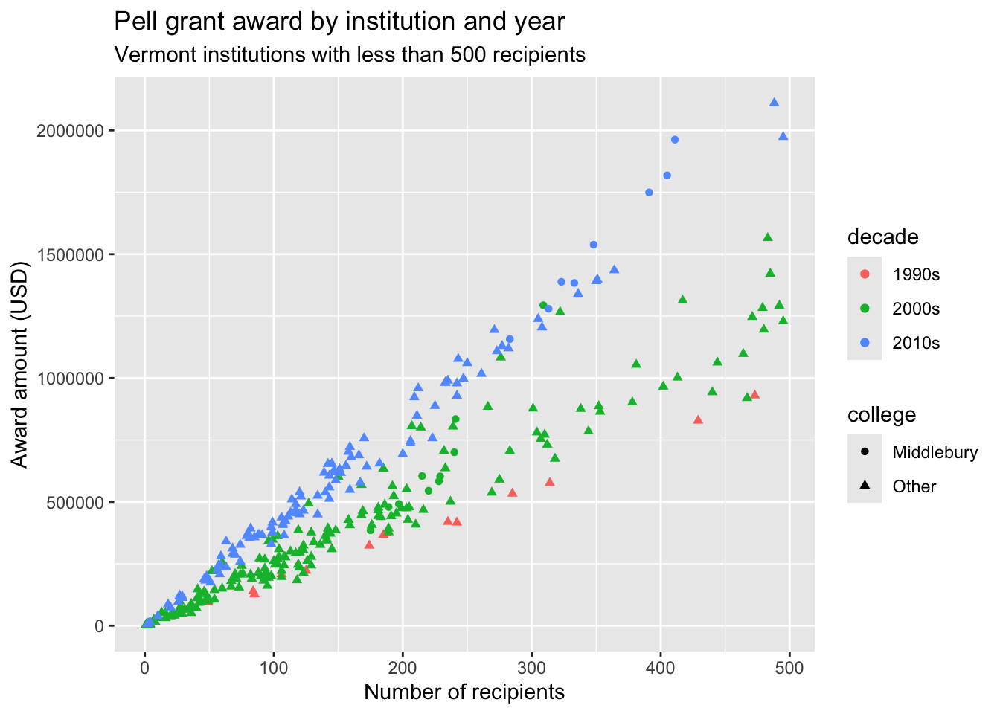

STAT 201: Midterm 1 Practice 2
A Pell Grant is a need-based federal grant for undergraduate students paying for college. Students are automatically considered for a Pell Grant award when they submit a FAFSA.
Each case in the dataset pell represents the Pell Grant award to a given school in a given year.
state: state/territory shortcodeaward: total award amount in USDrecipient: total number of recipientsname: name of college/universitysession: meeting IDyear: year
We also have a dataset called states that provide information on the states and territories of the US. The variables are:
NAME: name of the state/territoryAbbreviation: state/territory shortcodeType: political devision (“state” or “territory”)
Run the following code chunk to load in the two datasets:
Exercise 1
Let’s clean and wrangle the data a bit.
- Remove any case where at least one of the following is true:
- The school is missing information about the award amount
- The school had less than 1 student receiving a Pell Grant
- The school receive an award of 0 dollars but had more than 0 students recieve a Pell grant
- Create a new variable called
award_ppthat represents the award amount per person for each school - Create a new variable called
decadethat takes the value:- “1990s” if the award was granted in the 1990s
- “2000s” if the award was granted in the 2000s
- “2010s” if the award was granted in the 2010s
Store your cleaned and wrangled data frame back into pell.
Exercise 2
Make a visualization the shows the distribution of the award amount per person for each decade. Have informative labels and titles. Interpret what you see.
Answer:
Exercise 3
Now let’s bring in the information about states vs territories. Combine the two datasets into a single dataset called pell2 that retains all observations about pell grants awards for which we also have information about the type of political division (i.e. state or territory).
Exercise 4
For awards made in 2015, create a beautiful table that displays the mean and standard deviation of the award per person for each of the two political divisions. Then answer the question: did the two political divisions differ in the Pell grant awarded?
Answer:
Exercise 5
Display a beautiful table of the five U.S. states that received the largest statewide average award per person in the 2010s.
Exercise 6
Re-create the following plot:
